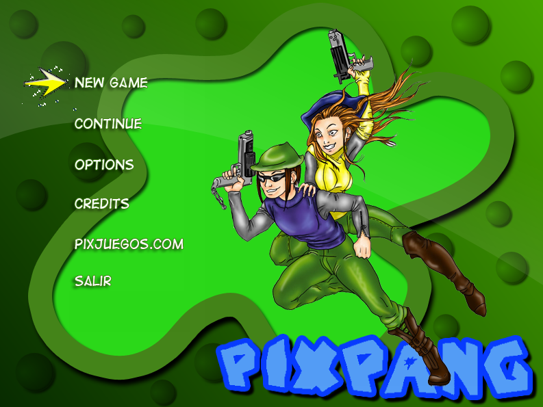
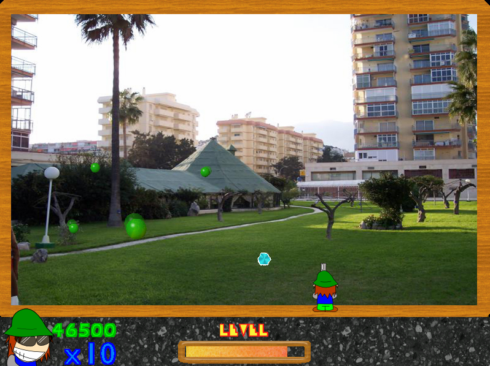

PiX Pang: 2.1 (Actual)
Esta es la última versión disponible de PiX Pang y la que está en la página web de PiX Juegos.
A diferencia de la versión anterior (2.0), esta versión está mas reducida en términos de contenido, pero se considera la más estable de todas.
Está compilado en una build de BennuGD del 2012 y es compatible con los sistemas operativos Windows Vista y superior (hasta Windows 11).

Menú

Ingame
Curiosidades:
- Si se conecta un joystick, se puede jugar de a dos jugadores.
- En el archivo fpg (el que almacena sprites) se pueden ver todos los sprites del menú en español, pero esta versión carece de una opción para cambiar el idioma.
- Al presionar C, se puede activar un cheat menu.